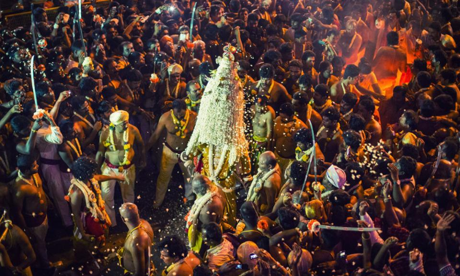
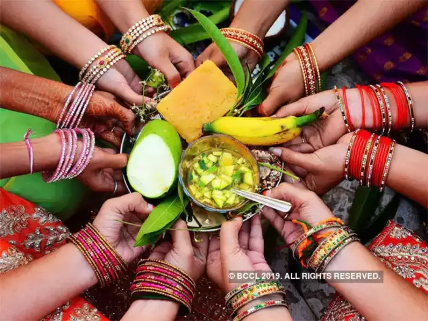
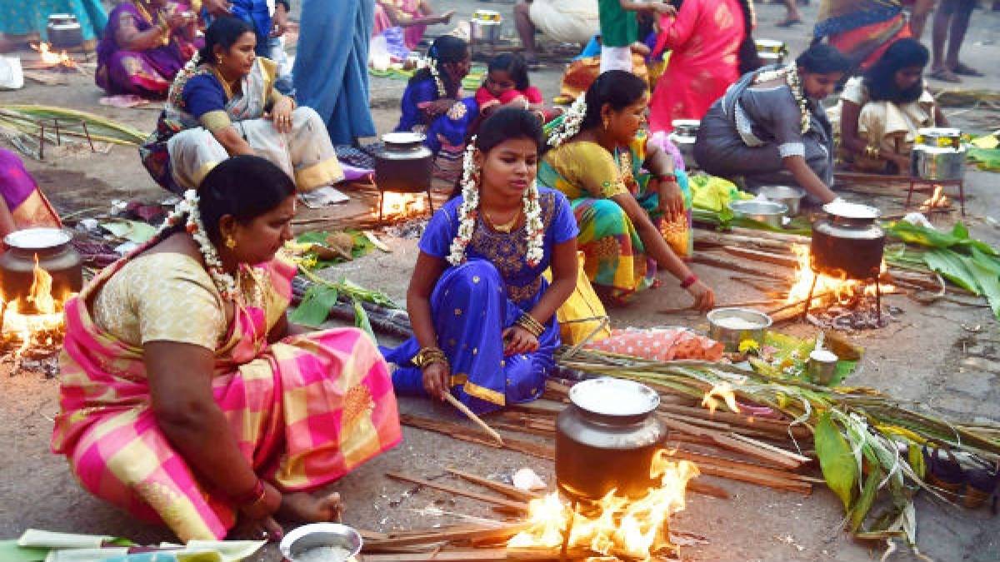
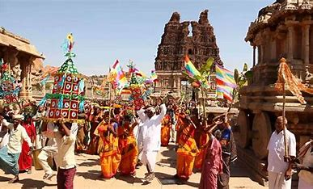
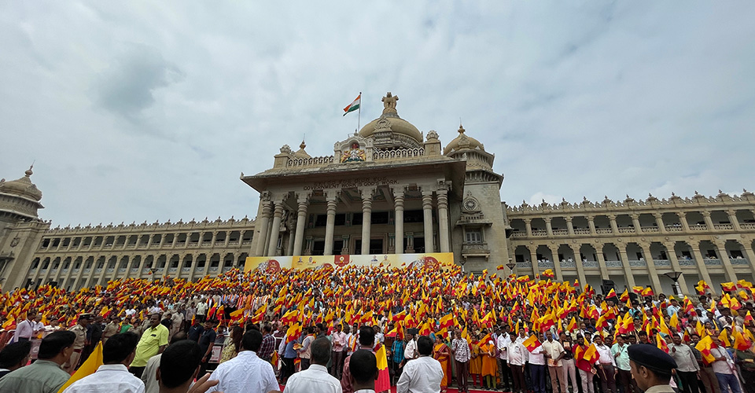
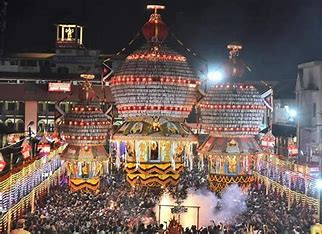

Maharashtra, with its rich cultural heritage and diverse population, celebrates a wide array of festivals throughout the year. These festivals reflect the traditions, customs, and religious beliefs of the people.
Religious Festivals
Karaga:
A unique festival in Bangalore dedicated to Goddess Draupadi, featuring a night procession with devotees carrying decorated pots
Ugadi:
The Kannada New Year, marked by rituals, prayers, and traditional foods, celebrating the arrival of spring.
Pongal:
While primarily a Tamil festival, some communities in Karnataka celebrate it with offerings to the Sun God, marking the harvest season.



Cultural Festivals
Hampi Utsav:
A vibrant festival held in the UNESCO World Heritage Site of Hampi, featuring music, dance, and traditional arts that celebrate the history and culture of the region.
Karnataka Rajyotsava:
Celebrated on November 1st, this state festival marks the formation of Karnataka and features cultural programs, parades, and performances highlighting the state's heritage.
Rathotsava (Chariot Festival):
Celebrated in various temples across Karnataka, this festival features the pulling of decorated chariots, accompanied by music and dance.


